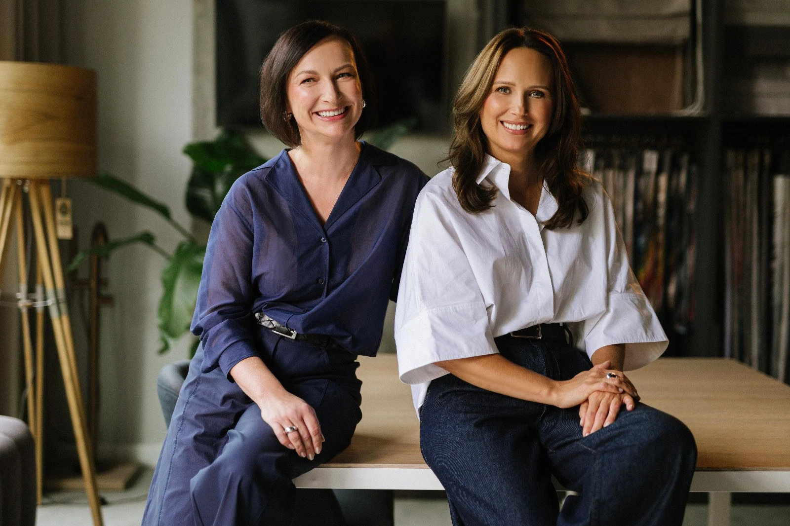

Na początek: bezpłatne spotkanie
Pierwsze spotkanie jest u nas bezpłatne i do niczego nie zobowiązuje. Rozmawiamy o Twojej inwestycji, o tym, jak mieszkasz, i o tym, co chcesz zmienić. Na tej podstawie dobieramy zakres współpracy. Po spotkaniu przygotowujemy ofertę w ciągu 2 dni roboczych. Wycena zależy od metrażu i zakresu, dlatego każda jest indywidualna.
Nie musisz mieć gotowej wizji. Wystarczy, że opowiesz, jak wygląda Wasz zwykły dzień. Resztę zajmiemy się my.
Krok 1: Poznajemy
Rozmawiamy o potrzebach, rytmie dnia i zakresie inwestycji. Pytamy o codzienność domowników, o to, czego nie mogą sobie odmówić i czego nie lubią. To najważniejszy etap, bo od niego zależy wszystko, co później.

Krok 2: Porządkujemy funkcję
Budujemy ergonomiczny układ dopasowany do Waszej codzienności. Najpierw pokazujemy kilka opcji układu, a potem razem tworzymy z nich jeden, ostateczny wariant. Dopiero gdy układ jest zatwierdzony, idziemy dalej.
Krok 3: Nadajemy charakter
To moment na materiały, kolor, światło i właściwe proporcje. Pokazujemy to na wizualizacjach. Przewidujemy dwie tury zmian, a w każdej z nich możesz zgłosić wiele uwag naraz. Chodzi o to, żeby uwzględnić je wszystkie jednocześnie, na jednym renderze.
Krok 4: Przekładamy na konkret
Przygotowujemy dokumentację czytelną dla wykonawców. To rysunki i zestawienia, z którymi ekipa wie, co ma zrobić. Projekt przestaje być zbiorem ładnych obrazów, a staje się planem realizacji.
Krok 5: Jesteśmy przy realizacji
Wspieramy Twoje decyzje i pilnujemy spójności projektu. W zakresie nadzoru koordynujemy wykonawców, zamówienia, dostawy i wyceny. Zakres i cena nadzoru zależą od czasu trwania prac i wielkości inwestycji, dlatego wyceniamy je indywidualnie.
Ile to trwa
Czas zależy przede wszystkim od wielkości wnętrza i od tego, jak szybko podejmujesz decyzje. Dla mieszkania około 50 m² to zwykle od około trzech miesięcy. Część elementów projektu przygotowujemy wcześniej, więc nie trzeba czekać na koniec całego projektu, żeby zacząć prace.
Czy mogę współpracować z Wami online
Tak. Projektujemy wnętrza we Wrocławiu i okolicach, a także online. Jeśli potrzebujesz zobaczyć materiały na żywo, zapraszamy do naszego showroomu przy Zwycięskiej, po wcześniejszym umówieniu wizyty.
Co zrobić na start
Zbierz rzut mieszkania lub domu i kilka zdjęć stanu obecnego.
Zastanów się, jak wygląda Wasz zwykły dzień i co jest dla Was najważniejsze.
Napisz do nas albo umów bezpłatne spotkanie.
Masz pytania o to, jak mogłaby wyglądać współpraca przy Twoim wnętrzu? Napisz do nas, odpowiemy w ciągu 2 dni roboczych. Umów bezpłatne spotkanie.